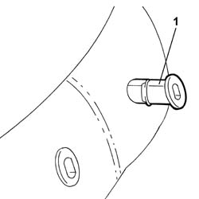
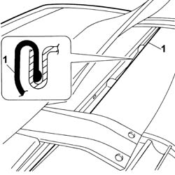
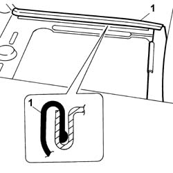
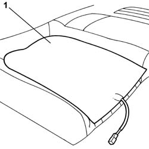

7050M26 Rear seat backrest heater pad, left or right - R.R. after electric circuit check
- Path
- Procedures > 70 FITTINGS > 7050 REAR SEATS > 7050M REAR SEAT HEATING > 7050M26 Rear seat backrest heater pad, left or right - R.R. after electric circuit check
- Kind
- repair procedure (removal / refitting; the operation number is the code)
- Applies to
- all engines; all production periods
- Interactive page
- https://sloeber94.github.io/elrnDB-lThss/en/#/197600
Applies to: all engines; all production periods
 Removing
Removing
 Refitting
Refitting- Disconnect the negative battery terminal.
See in Op. 7050A20 Single rear seat cushion - R.R.
See in Op. 7050A19 REAR SEAT BACKREST - R.R.
1. Release the part connected to the heater pad from the head restraint pins housing and remove it.

Applies to: all engines; all production periods
1. Release the cover along the backrest perimeter in the area connected to the heater pad.

Applies to: all engines; all production periods
1. Remove the retaining seals (1a) and separate the cover (1b) from the backrest upholstery in the area affected by the heater pad.

Applies to: all engines; all production periods
1. Detach the heater pad and remove it.

Applies to: all engines; all production periods
Refitting
Removing- Check that the heater pad is not damaged.
- Replace the double-sided tape on the heater pad.
- Position the heater pad and secure the adhesive side to the backrest upholstery.
- Fit the cover on the upholstery and secure it using the sealing rings.
 | Description | Code | Function |
|---|---|---|---|
. | Pliers for metal points | 1.878.017.001 | Fastening cover to upholstery |
- Fit the cover surround along the perimeter.
- Fit the head restraint pins in place.
See in Op. 7050A19 REAR SEAT BACKREST - R.R.
See in Op. 7050A20 Single rear seat cushion - R.R.
- Connect the negative battery terminal.